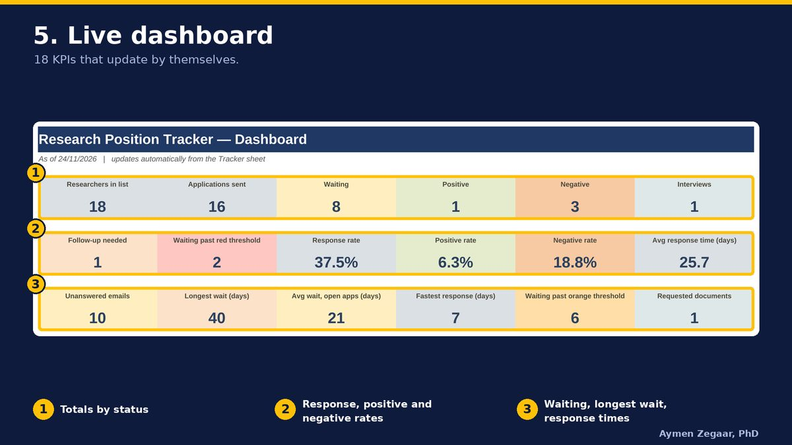
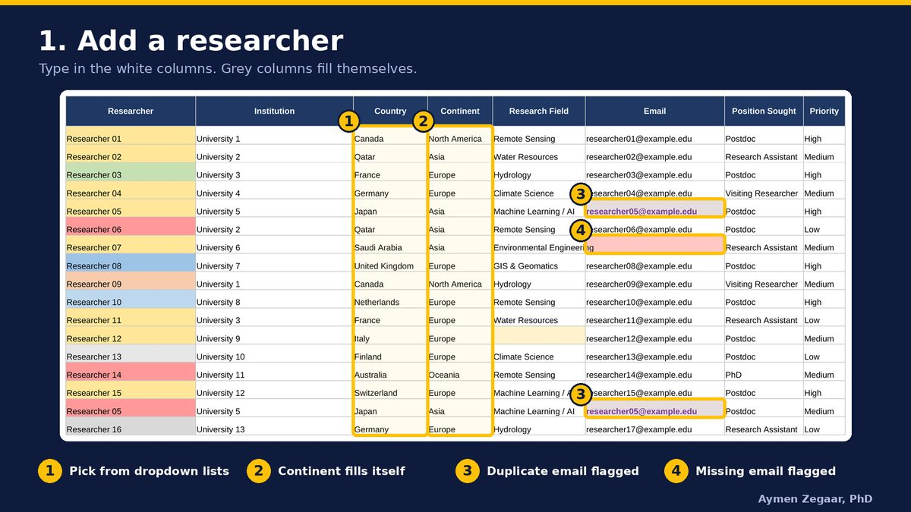
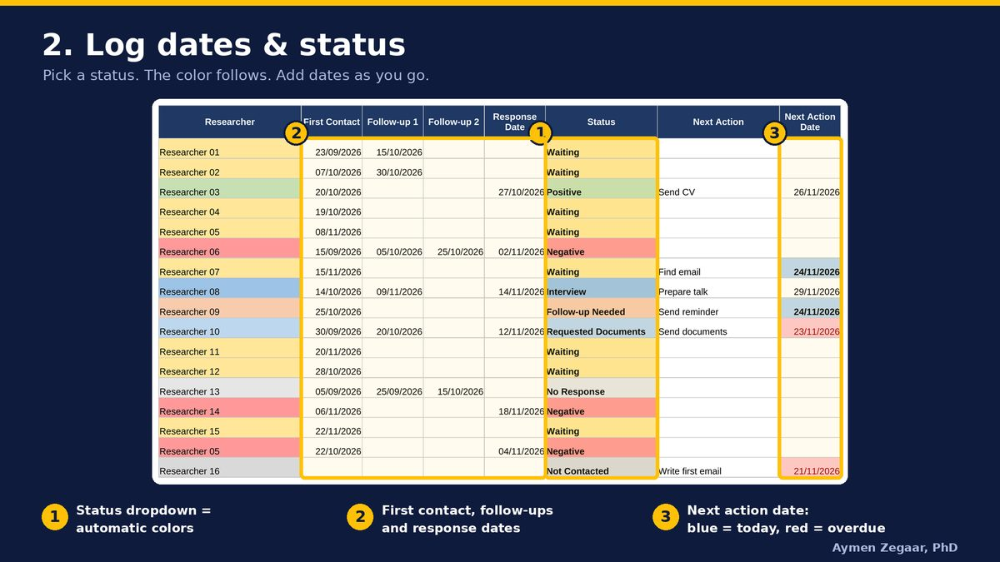
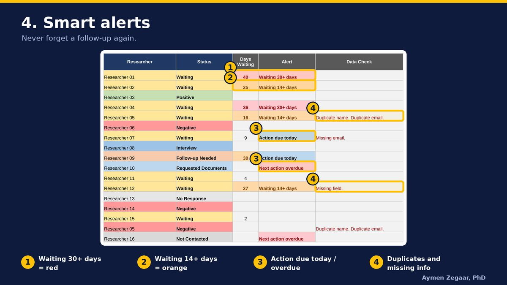
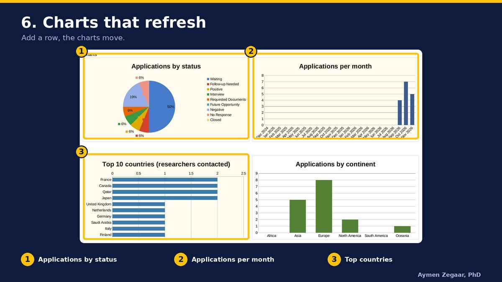

A smart tracker for PhDs and researchers: status dropdowns, automatic alerts, and a live dashboard for your postdoc, RA and visiting-researcher applications.
Get the free template




All examples use fictional placeholder data.
Empty and ready to fill. Choose the version you use.